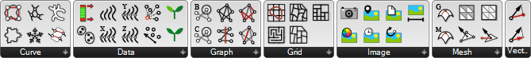

SOFTWARE · GRAPH ALGORITHMS · COMPUTATIONAL GEOMETRY
Computational design toolkit for Grasshopper · 200+ Users
Built with
c# · rhinocommon · grasshopper sdk · xmp core sdk
Moth is a fun toolkit with various functionalities that I have found useful throughout my years of working with Grasshopper, a visual programming environment for Rhinoceros 3D. It brings recurring computational design solutions together as reusable tools, from mesh analysis and clustering to procedural urban generation, graph extraction, and image geolocation.

Published through the Rhino Package Manager.
Moth has 200+ users.